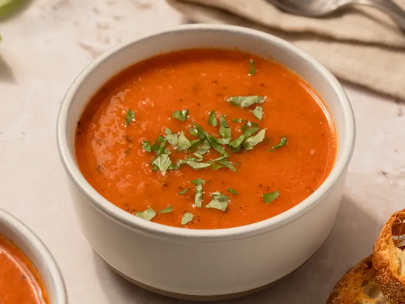

Roasted Tomato Soup

Ingredients
- 3 pounds roma (plum) tomatoes, quartered
- ½ red bell pepper, chopped
- 3 tablespoons olive oil
- 1 tablespoon sea salt
- 1 ½ teaspoons freshly ground black pepper
- 3 cloves garlic, halved
- 5 cups low-sodium chicken broth
- 1 teaspoon dried parsley
Directions
- Gather all of your ingredients. Preheat your oven to 400 degrees F (200 Degrees C).
Line a large baking sheet with aluminum foil.
-
Spread tomatoes, onion, and red bell pepper in one layer onto the prepared baking sheet. Drizzle
olive oil over the tomato mixture and season with salt and pepper.
- Roast in the preheated oven for 30 minitues; add garlic and continue roasting uyntil tomato mixture is tender, about 15 more miniutes
- Meanwhile, bring chicken broth, basil, and parsley to a boil in a large stockpot; reduce heat and simmer.
- Put half the tomato mixture into a blender. Cover and hold lid down; pulse a few times before leaving on to blend until smooth, adding a small amount of the warm chicken broth if liquid is needed.
- Pour pureed tomato mixture into the stockpot with chicken broth. Puree remaining half of the tomato mixture and add to chicken stock mixture, stirring well. Simmer until heated through, about 5 minutes.
- Please Enjoy!
Please Click the link below for the origional recipe
Origional Recipe
Please click the link below to be lead to the home page
Home